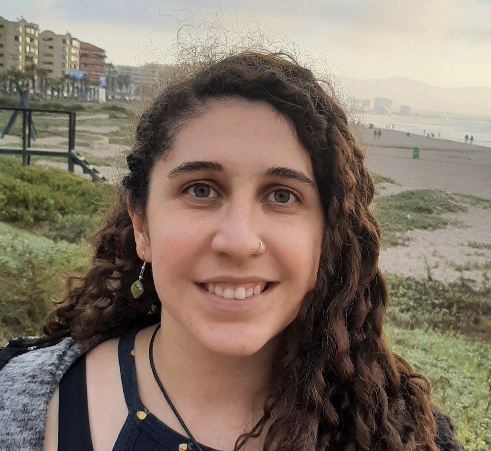

SEGUE Team
The SEGUE team is composed of four people.
Clémentine Cottineau-Mugadza, PI of the project.

Clémentine Cottineau-Mugadza is a geographer, currently Assistant Professor of Urban Studies at the Faculty of Architecture in TU Delft. Her research interests include urban inequality and segregation, urban scaling, urban shrinkage and the history of urban models. Working from the scale of the individual to that of macro-regional systems of cities, she uses advanced computational methods and microdata to review, analyze, model, and visualize the complexity of processes producing and maintaining inequalities in cities. Recent relevant publications include (Cottineau & Vallée, 2022), (Cottineau & Pumain, 2022), (Sarkar et al., 2024), (San Millán, Cottineau‐Mugadza, et al., 2025), (San Millán, Cottineau-Mugadza, et al., 2025) and (Cottineau-Mugadza, 2025).
Clémentine holds a PhD in Geography from Université Paris 1 Panthéon-Sorbonne. During previous research positions at UCL’s Centre for Advanced Spatial Analysis and CNRS’s Centre Maurice Halbwachs between 2014 and 2020, she has worked on the patterns of post-Soviet urbanisation, urban scaling laws, spatial agent-based modelling and industrial geographies.
Javier San Millan Tejedor, Phd candidate since 2023.
Javier joined SEGUE in November 2023 as a PhD researcher. His research focuses on the computation and statistical modelling of economic segregation in The Netherlands. He contributes to objectives 2 and 4.
Diego Buitrago Mora, postdoctoral researcher since 2024.
Diego joined SEGUE in July 2024 as a postdoctoral researcher. His research focuses on the evaluation of remediatory policies aimed to reduce economic segregation in The Netherlands. He is therefore contributing to objectives 2 and 4.
Paulina Pizarro Kumpf, Phd candidate since 2025.

Paulina is a Transport Engineer from Pontificia Universidad Católica de Chile, specialized in urban mobility. In 2017, She did a research internship at Texas A&M, and in 2019, worked as an intern consultant at the Interamerican Development Bank in the Transportation Division, where she worked on electromobility and gender equality in transportation. In 2022-2023, she designed sustainable transport solutions and evaluated the urban impacts of real estate developments at the Providencia municipality in an interdisciplinary team. In 2024 she obtained my MSc where she trained neural networks to extract information from satellite images to improve data availability for the design of transportation systems.
Paulina joined SEGUE in February 2025 as a PhD researcher. Her research focuses on the use of agent-based models (ABM) to understand and simulate economic segregation in The Netherlands. She is therefore contributing to objectives 3 and 4.